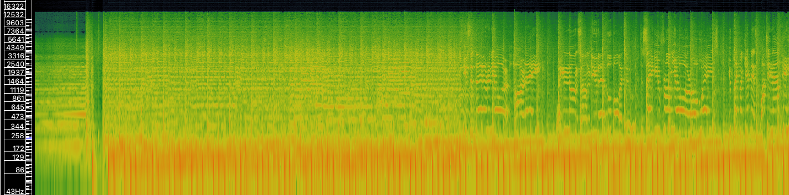
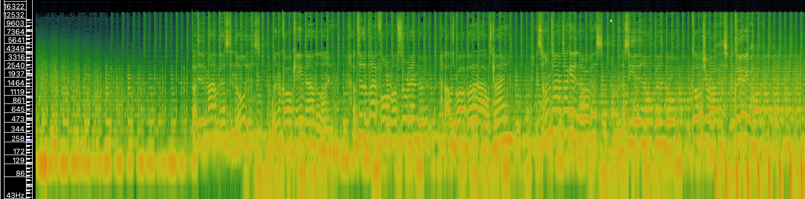
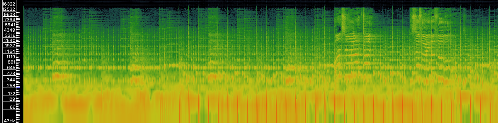

Task 1: Find and describe 3 audio tracks relating to your theme
| When You Were Young | Human | Shot at the Night | |
|---|---|---|---|
| Artist | The Killers | The Killers | The Killers |
| Composer(s) | Brandon Flowers, Dave Keuning, Mark Stoermer, Ronnie Vannucci | Dave Keuning, Ronnie Vannucci, Brandon Flowers, Mark Stoermer | Brandon Flowers |
| Producer(s) | Flood, Alan Moulder, The Killers | Stuart Price, The Killers | Anthony Gonzalez |
| Copyright | © 2006 The Island Def Jam Music Group | An Island Records Release © 2008 UMG Recordings, Inc. | © 2017 Island Records, a division of UMG Recordings, Inc. |
| Genre | Alternative rock, post-punk revival, new wave, heartland rock | New wave, synth-pop, dance-rock | Synth-pop, pop rock |
| Source | Internet Archive (link) | Internet Archive (link) | Internet Archive (link) |
| File/audio format | MP3 | MP3 | MP3 |
| Number of channels | 2 (stereo) | 2 (stereo) | 2 (stereo) |
| Sample rate | 44.1 kHz | 44.1 kHz | 44.1 kHz |
| Bitrate | 192 kbps | 192 kbps | 192 kbps |
| Duration | 5:16 | 4:20 | 4:06 |
Task 2: Perform basic analysis of your 3 tracks in SonicVisualiser
When You Were Young
Waveform:
Spectrogram:
Human
Waveform:
Spectrogram:
Shot at the Night
Waveform:
Spectrogram:
Analysis
A time-frequency analysis makes it easier to make educated guesses regarding a piece's instrumentation. Because it shows a representation of the frequencies on a piece over time, we can infer more information than a waveform can provide. For example, in When You Were Young, we can see that there is percussion and bass (lower frequencies) throughout the entire song, and we can see that the vocals start at around 1:47, and further in the spectrogram, we can even see vocal inflections. A waveform shows the energy level at any given point in a piece, but we cannot infer anything regarding a piece's instrumentation.